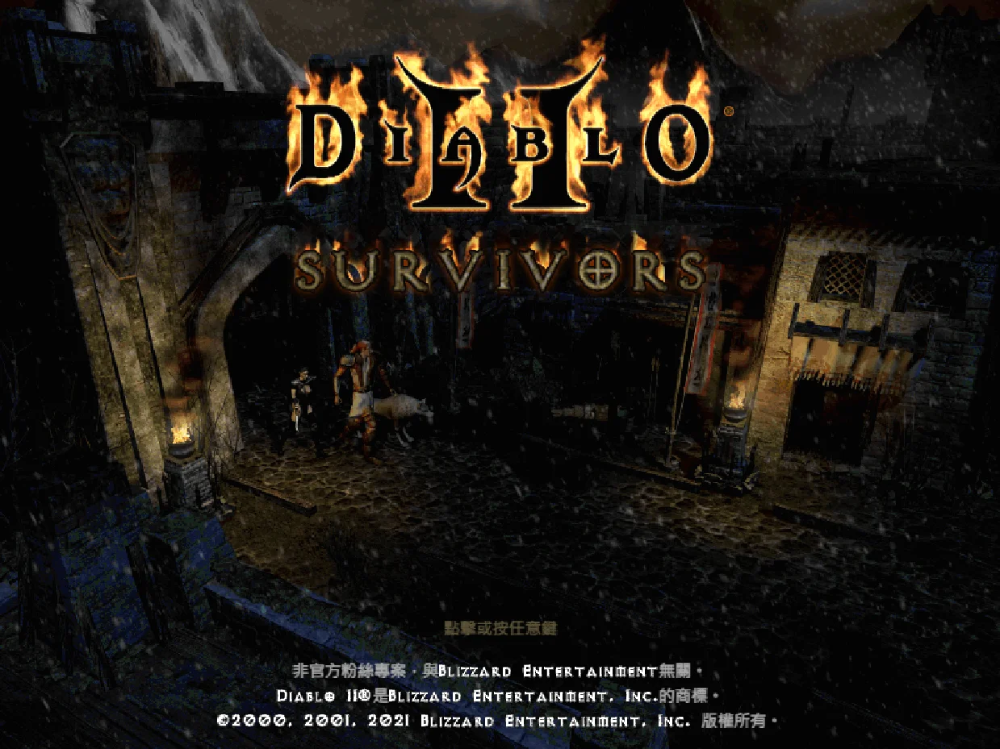
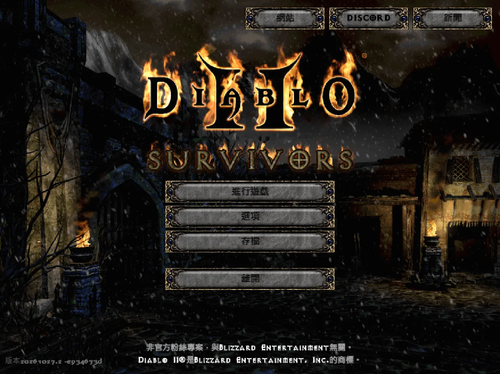
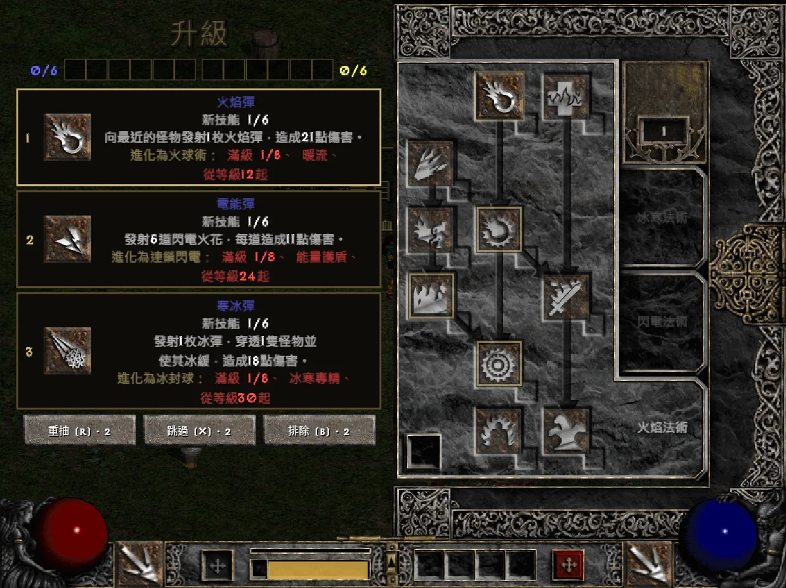
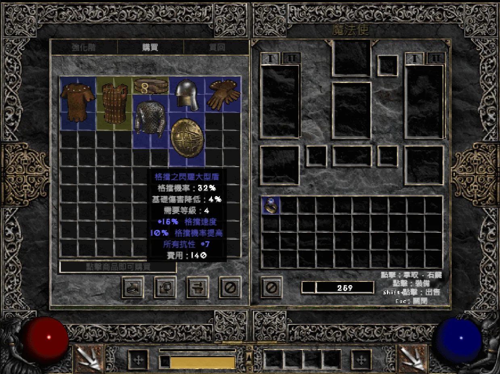
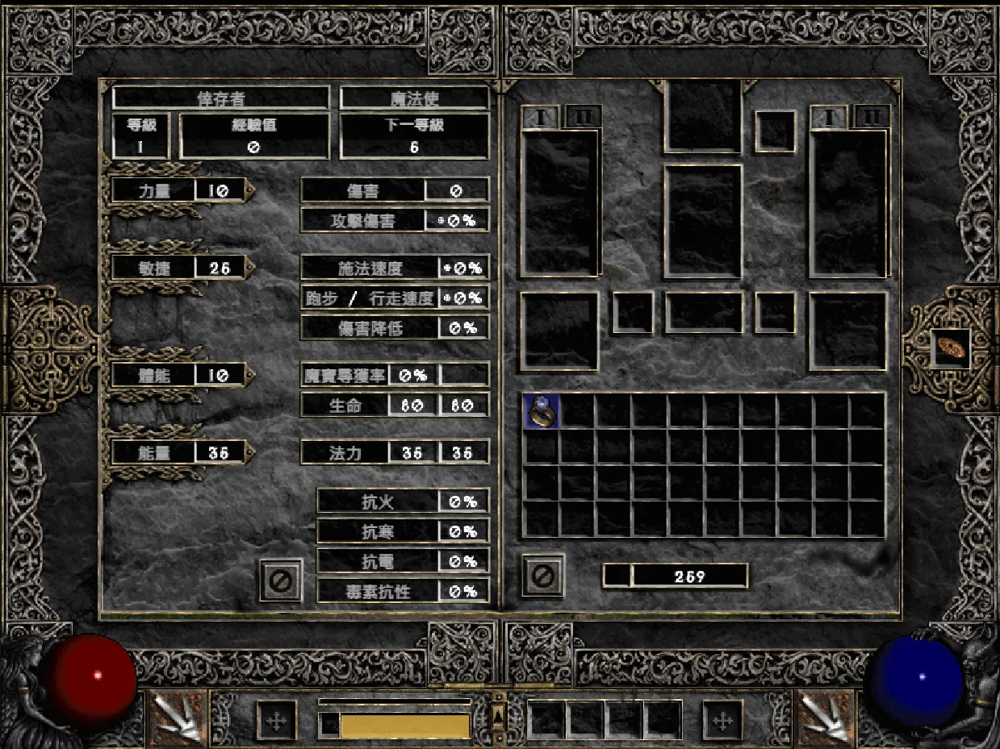
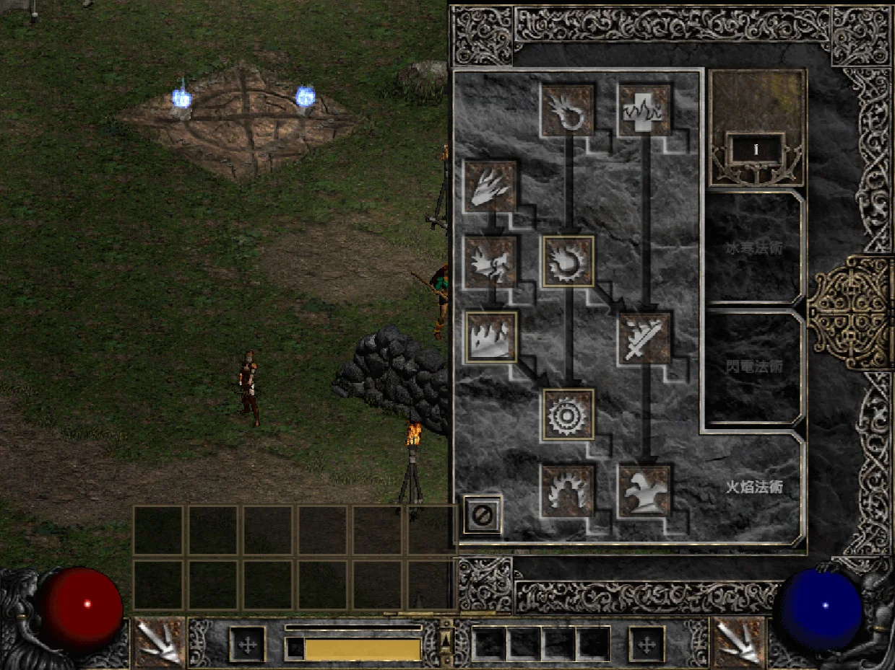
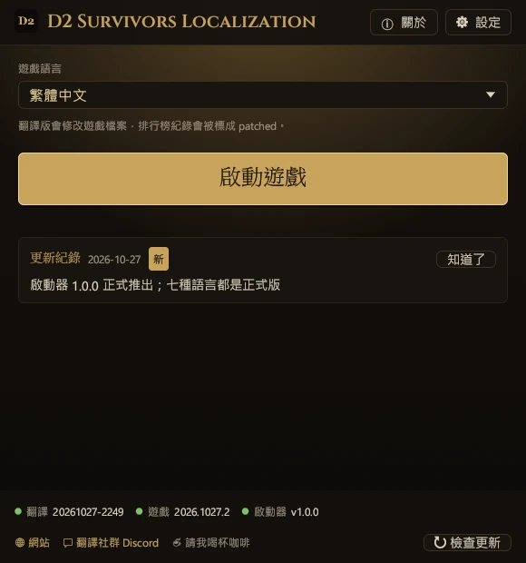
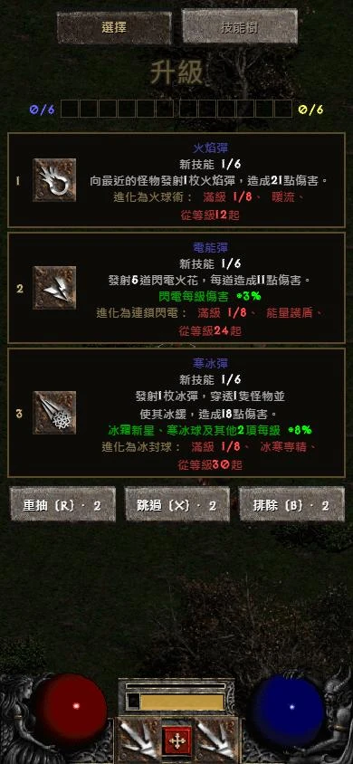

D2 Survivors
Created by framara
A free, unofficial fan-made survivors-like set in the world of Diablo II. This translation project is not affiliated with its author; please report game issues through the official channels.
Unofficial fan translation
Choose your version
Play Diablo 2 Survivors, the free fan game where Diablo 2 meets Vampire Survivors, in your own language. This project translates the game itself, not just a guide: menus, skills, items, monsters, and level-up cards, using the official Diablo II: Resurrected terms. The launcher installs, updates, and restores it in one click.
Play Diablo 2 Survivors (also called Diablo Survivors) in your own language. This project translates the game itself, not just a guide: in the browser, one click on a bookmark switches the game to Chinese (Traditional), Chinese (Simplified), Japanese, German, French, Russian, or Polish, using the official Diablo II: Resurrected terms. Nothing to install, on computers and phones alike.










Game screens: D2 Survivors (framara), running on the player's own Diablo II files
This project only provides translations and contains no game files. Before you start, get D2 Survivors and Diablo II from the official sources below.
Created by framara
A free, unofficial fan-made survivors-like set in the world of Diablo II. This translation project is not affiliated with its author; please report game issues through the official channels.
Blizzard Entertainment
D2 Survivors reads art and sound from the Diablo II on your computer, so you need your own copy of Diablo II: Resurrected, or Diablo II + Lord of Destruction (patch 1.14).
Terminology: names of skills, items, monsters, and areas follow the official Diablo II: Resurrected translations; everything else is translated by this project.
Chinese (Traditional), Chinese (Simplified), Japanese, German, French, Russian, and Polish are all fully released. Languages marked Planned will follow.
Updates to translations, languages, and the launcher. The launcher and the bookmark pick up the latest translation every time, with no new download.
You never edit game files by hand; the launcher does it all. Close the game first. The launcher shows its screens in the language you pick, so the button names below may read differently on yours.
Download the desktop app from the official D2 Survivors site, point its setup screen at your Diablo II install, and make sure the game runs.
Download d2s-launcher.exe and put it in any folder. No installation needed.
The first screen lists every language, each written in its own script. Click yours, then “→”: the launcher and the game translation both use that language from then on.
① “Game”: the launcher finds D2 Survivors (by default in %LOCALAPPDATA%\Programs\D2 Survivors; if it’s elsewhere, use “Choose folder…”). ② “Diablo II”: it looks for your Diablo II: Resurrected or classic Diablo II; you can “Skip” this if it isn’t found. ③ “Done”: optionally click “Create a desktop shortcut”, then “Play”. The first run downloads the translation and backs up the original app.asar.
By default every start fetches the latest translation (“Update translations on start” in “Settings”), and it re-applies itself after game updates. To switch languages, change “Game language” on the main screen.
app.asar back.%LOCALAPPDATA%\D2SurvivorsLauncher folder.To make your own shortcut, use this line as its target: it starts the game in the given language without opening the launcher window. (The shortcut from “Create a desktop shortcut” opens the window and starts the game right away.)
d2s-launcher.exe --launch --lang zh-TW--launch--play--lang <id>--no-update--update--restore--self-update--statusPlaying in the browser at d2survivors.lol? One bookmark switches the game to Chinese (Traditional), Chinese (Simplified), Japanese, German, French, Russian, or Polish, using the same translation as the launcher. Nothing to install, on computers and phones alike.
D2 Localization ← drag to the bookmarks bar
javascript:import('https://cycleapple.github.io/d2survivors-localization/web/d2zh.js').then(m=>m.default()).catch(e=>alert('D2 Survivors Localization: '+e))No. It is an unofficial fan translation, not affiliated with the D2 Survivors developers or Blizzard Entertainment.
Yes. The launcher is Windows-only for now; on Mac, Linux, and phones, play the web version and use the bookmark from the Browser tab.
No. The launcher only replaces resources\app.asar in the game folder, after backing up the original. Saves live elsewhere and are never read or changed.
No. Saves stay in your browser as usual. The bookmark only swaps the game text in the page you have open and leaves nothing behind; reloading brings back the original.
A game update replaces app.asar, so the translation disappears until you start the game from the launcher or its shortcut again, which re-applies it.
If a new version changed too much for the patch rules to match, the launcher doesn’t force anything: it starts the original game and says the translation is being fixed. Once it’s fixed, the next start applies it again automatically; you don’t need to do anything.
The bookmark checks that its patch rules still match the new version every time. If they don’t, it says the translation needs an update and doesn’t start, leaving the original game untouched. Play in English until it’s updated here.
The translation borrows the game's built-in Korean language slot, so after applying it the menu shows the name of the language you picked (for example 简体中文) where Korean used to be. To play in Korean, pick 한국어 (원본) in the launcher.
Android Chrome doesn’t run bookmarks tapped in the bookmarks list: type the bookmark name “D2 Localization” in the address bar and tap the bookmark that appears below. On iPhone, open Safari’s bookmarks while on the game page and tap it there.
Also check that the bookmark’s whole address was replaced with the bookmark code, starting with javascript:.
All of the game’s text is translated and has been checked in game for anything left untranslated. If you see English, the game has probably just been updated with new text; a later translation update fills it in, and the launcher downloads it automatically. If it stays in English, please let us know.
All of the game’s text is translated and has been checked in game for anything left untranslated. If you see English, the game has probably just been updated with new text; a later translation update fills it in, and the bookmark always loads the latest translation. If it stays in English, please let us know.
The launcher isn’t code-signed (a signing certificate costs money every year), so Windows SmartScreen warns about it until enough people have downloaded it.
Click More info, then Run anyway; Windows won’t ask again. Only download it from this site or GitHub Releases. Every release includes d2s-launcher.exe.sha256, which you can check with certutil -hashfile d2s-launcher.exe SHA256.
If your browser says the file isn’t commonly downloaded, choose Keep from the download’s menu.
Not yet. The game itself only allows English letters and Korean in character names.
Typos, missing translations, and problems with the bookmark or launcher go to the localization community Discord, where news is posted too.
Problems with the game itself (not caused by the translation) go to the official D2 Survivors Discord.
Gladly! Every language is fully released, but a translation can always get better. If you spot awkward wording or a typo, especially in your native language, please tell us. Get in touch here.